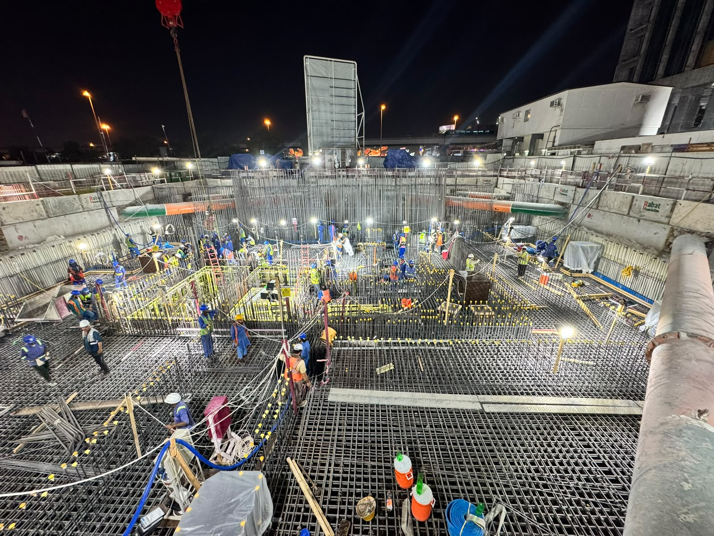
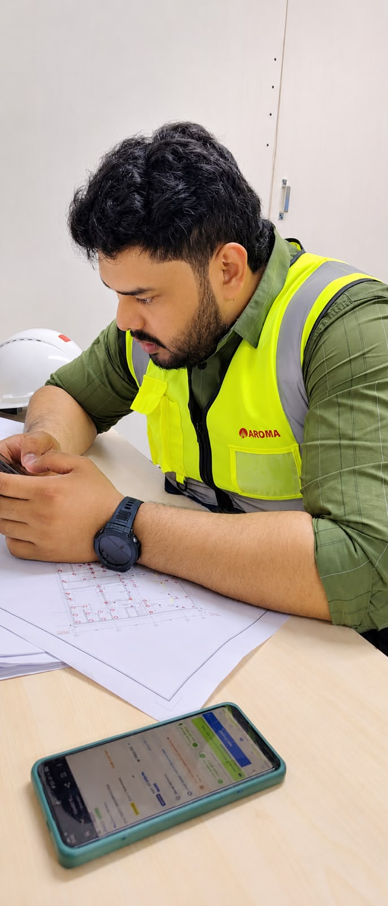

LIVE ASSIGNMENT
Aroma International Building Contracting
Site Engineer – Mechanical
- Residential tower
- B+G+54+Roof
- Parking structure
- Separate G+10+Roof
- Work mode
- Verify · coordinate · record · follow through
DUBAI · UAE / 2026
A working record of how I moved from mechanical engineering into commercial coordination, data thinking and live MEP site execution.
01 / POSITION
I work where drawings become site decisions: connecting the condition in front of the team with the owner, evidence and next action needed to keep work moving.


02 / HOW I GOT HERE
Click a marker to read the context behind each move.
03 / CURRENT FIELD BOARD
Contractor-side coordination and execution follow-up. Written case-study evidence only—no technical files, drawings or confidential package data.
LIVE ASSIGNMENT
Site Engineer – Mechanical
04 / SYSTEMS I USE
Choose a lens to filter the working toolkit.
05 / NEXT